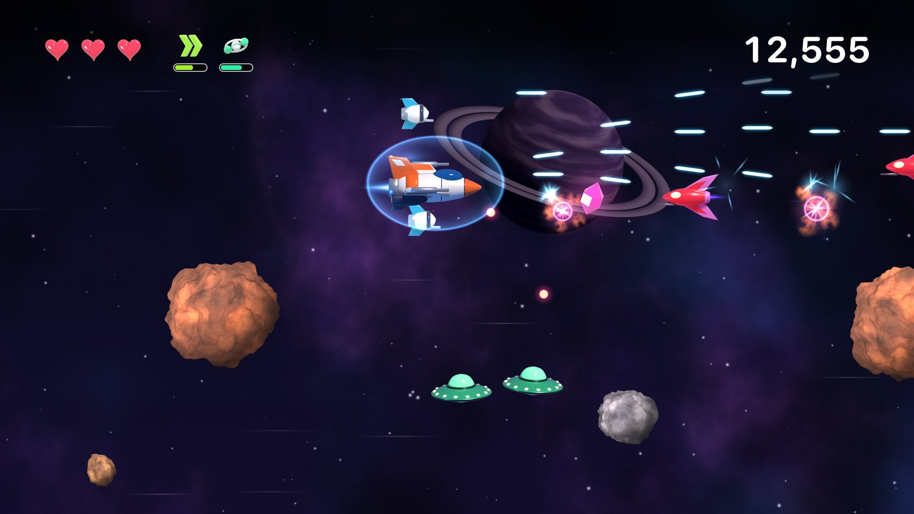

Spaceship
One spaceship, 14 bonuses, one endless round.
How to play
| Apple TV: Up, Down, Left, Right | Fly. The ship fires by itself. |
| Apple TV: Play/Pause or Back (Menu on older remotes) | Pause. |
| iPhone, iPad: drag anywhere on the screen | Fly. The ship fires by itself. |
| iPhone, iPad: the pause button | Pause. |
| Mac, iPad keyboard: the arrow keys or WASD | Fly. The ship fires by itself. |
| Mac, iPad keyboard: Esc or P | Pause. |
| Meteor, saucer, fighter | Shoot it or dodge it. A hit takes a life. |
Bonuses
| Three bars | One more shot, up to three at a time. |
| Rocket rack | Rockets that find a target. |
| Shield | It takes one hit. |
| Heart | One more life, up to three. |
| Star | 100 points. |
| Bomb | It clears the screen. |
| Two arrows | Rapid fire for 12 seconds. |
| Crystal | A laser for 7 seconds. |
| Two balls in orbit | Two drones for 16 seconds. |
| Lightning | A hit jumps to the next targets for 12 seconds. |
| Drill | The ship breaks everything that it touches for 7 seconds. |
| Magnet | Bonuses fly to the ship for 18 seconds. |
| Hourglass | Targets slow down for 8 seconds. |
| x2 | Double points for 15 seconds. |
Questions
Where are my results? The first screen has the Leaderboard button. Without Game Center it shows your own best rounds.
How do I see other players? Sign in to Game Center in the Settings of your device, then open the game again.
Does the game need the internet? No. The game works offline.
Support
Write to xepozz@icloud.com.